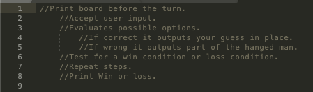

Instructions on how to get an 'A' in a class
Get to class on time and try not to miss any day.
Read the syllabus.
Get to know people around you.
Pay attention.
Write notes.
Asks questions/go to instructors’ office hours.
If you are struggling, see a tutor.
Turn in your homework on time.
Study.
Make time for school work.
How to play hangman
Print board before the turn.
Accept user input.
Evaluates possible options.
If correct it outputs your guess in place.
If wrong it outputs part of the hanged man.
Repeat steps.
Test for a win condition or loss condition.
Challenge
The main challege was deciding a topid to turn into pseudocode. Though we decided to attemt and outline the game of hangman as a computer tast.
Problems
Not sure if we did enough but there weren't any problems. We might have problems making this work in JavaScript if we end up doing so.
Results
We tried our best to be as specific as possible. Bellow is our pseudocode turned into JavaScript comments
